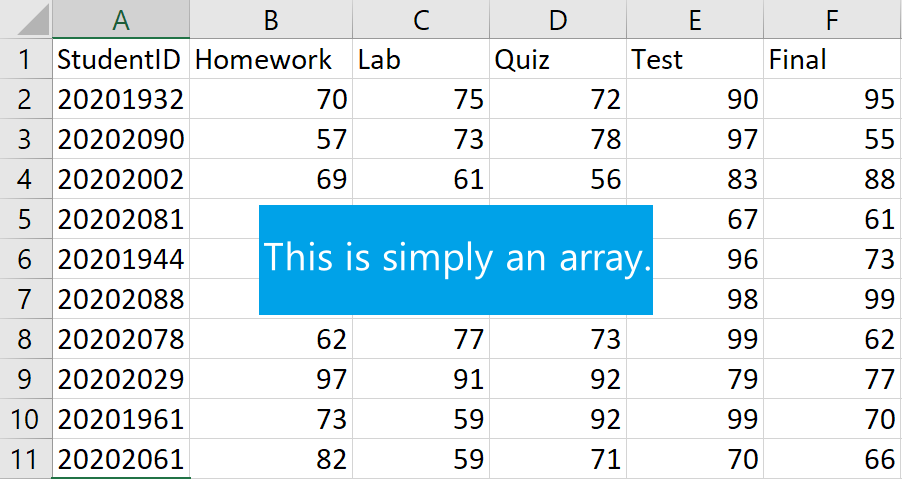
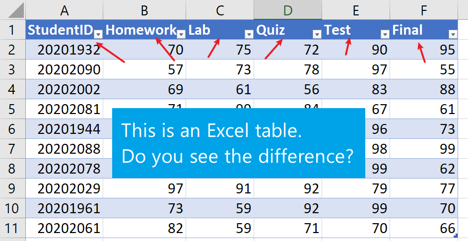
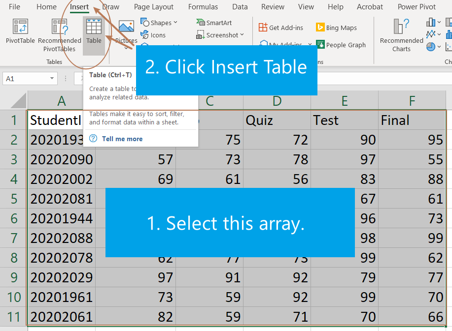
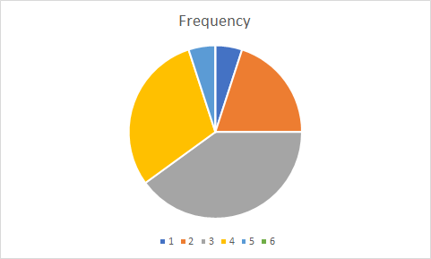
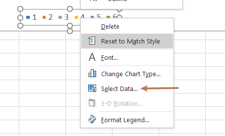
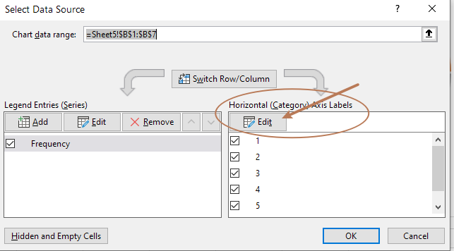
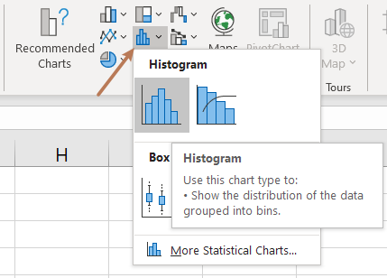

Excel Tables
Table is a primary way to store data. In general, a column of a table represents a variable and a row stores data associated to an object being observed.
In Excel, a table is not just an array (rectangular block) of data in a spreadsheet, but a special object with many useful properties, such as,
- always visible column headers,
- dynamic graphs/charts,
- calculation using column headings,
- Automatically formula filling in.


Creating a Table in Excel
To create a table from an array (rectangular block) of data in Excel is very easy. Simply select the array and then go to Insert choose the Table function.

Creating a Frequency Table
In Excel, to create a frequency table for a data array, we need a bin array which is used to split the date set into smaller intervals. The values in a bin array in Excel are (upper) boundaries of intervals. With a data array and a bin array, we can use the Excel function FREQUENCY (data_array, bins_array) to create a frequency table.
In this formula, the value in a bin array is the upper bound of a interval. That is, if the bin array consists of 30, 40, and 50, then the corresponding intervals will be , , ,, where and represent respectively numbers smaller and bigger than the minimum of the data set.
Example: Create a frequency table for the test scores 50 56 56 57 58 63 64 65 68 69 69 69 70 71 71 71 73 74 80 87 using the bin array 50 60 70 80 90 100.
Suppose the test scores are in column A and the bin array is in column B. Here is how to create a frequency table using the function FREQUENCY (data_array, bins_array):
- In column C, right to the smallest value of the bin array enter
=FEQUENCY( - select the test scores
- in the formula bar, enter the symbol comma
, - select the bin array
- in the formula bar, enter
).
Hit the Enter, you will get a frequency table.

Creating Charts in Excel
Excel has many built-in chart functions. To create a charts,
- Select the data array/table
- Under the
Inserttab, click on an appropriate chart in theChartscommand set.
The appearance of chart can be changed after being created.
Example: Create a Pie Chart for the following frequency table.
| Bins | Frequency |
|---|---|
| 0-50 | 1 |
| 51-60 | 4 |
| 61-70 | 8 |
| 71-80 | 6 |
| 81-90 | 1 |
| 91-100 | 0 |
Select the frequencies.
Under the Insert tab, click the
Insert Pie or Doughnut Chart.
Using bins as the legend:
Right click the legend (the bottom part of the chart) and choose
Select Data
In the popup windows, click
Edithorizontal axis label
Select bins and click OK and then OK again.

Add data labels or format them
Right click the pie and click
Add Data Labels.Right click the pie again and click
Format Data Labels, you can then choose formats for data labels.
Create Simple Histogram Charts in Excel
Select the data
On the
Inserttab, in theChartsgroup, from theInsert Statistic Chartdropdown list, selectHistogram:
Note: The histogram contains a special first bin which always contains the smallest number. This is different from many textbooks.
To format the histogram chart is similar to format a Pie chart. For example, you can change bin width from Format Axis.
Right-click on the horizontal axis and choose
Format Axisin the popup menu:In the
Format Axispane, on theAxis Optionstab, you may try different options for bins. See the following gif for an example.
Remark:
- Select the Overflow bin checkbox and type the number, all values above this number will be added to the last bin.
- Select the Underflow bin checkbox and type the number, all values below and equal to this number will be added to the first bin.
- Histograms show the shape and the spread of quantitative data. For categorical data, discrete by its definition, bar charts are usually used to represent category frequencies.
Lab Assignment #2
The following data set consists of 20 test scores.
89 62 40 42 9 16 88 73 39 72 71 51 40 37 72 81 36 13 10 70
Using the data set to
- Create a frequency table.
- A pie chart using the frequency table.
- A histogram with bin width 9.
- Describe the shape of the distribution.